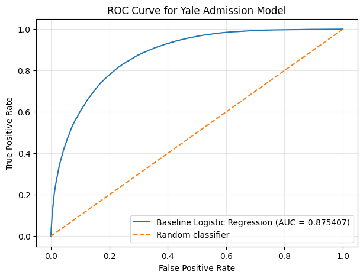
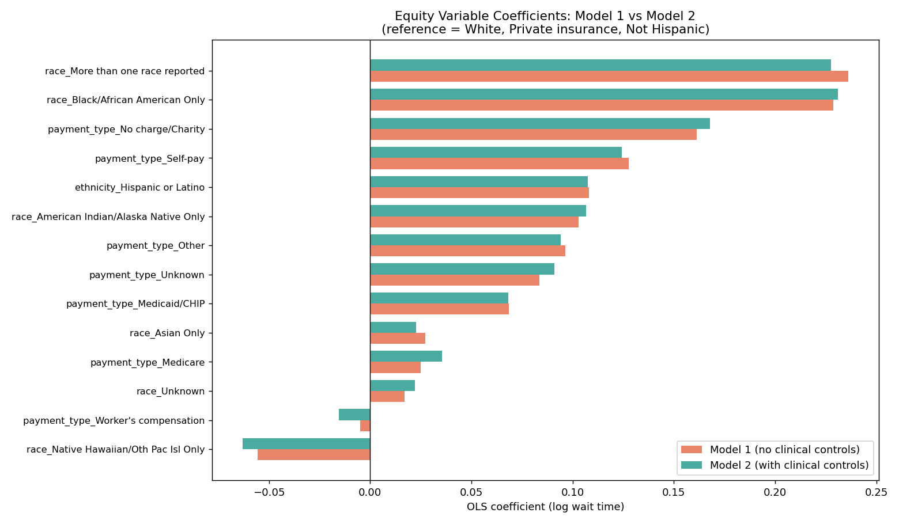

Wait-Time Analysis and Estimation
Use NHAMCS-trained models to compare approximate wait times and explore how demographic, access, and urgency variables relate to delays.
Emergency Care · Machine Learning · Equity
Contributors: Kushagra Aitha, Rupsa Bose, Miskatul Moon
AI4ALL Ignite Portfolio Project, 2026
We studied disparities in emergency department wait times and built a second workflow that estimates hospital admission risk from information available at triage.
Project overview
Emergency department delays and admission decisions affect access, patient experience, and care planning. Our project uses machine learning to study wait-time disparities and estimate hospital admission risk.
The work began as an analysis of whether wait times vary with patient demographics, access factors, and clinical urgency. It later evolved into a combined project with admission-risk screening, connecting what happens before first provider contact with what may happen after triage.
Our focus How much do clinical urgency, symptoms, and demographic factors help explain emergency department wait times and admission outcomes?
What we built
Each workflow uses a separate dataset and saved model designed for a different question.
Use NHAMCS-trained models to compare approximate wait times and explore how demographic, access, and urgency variables relate to delays.
Upload structured triage records and review each visit’s chance of admission, likely outcome, and position in a ranked review table.
Data
The NHAMCS and Yale datasets were analyzed independently and were not merged.
Wait-time analysis
2007–2022Public-use emergency department data with 329,249 visits in the final modeling set.
Admission prediction
560,484 visitsThe cleaned dataset keeps information available at arrival or initial triage.
ESI, the Emergency Severity Index, is a triage acuity score used to describe visit urgency.
Methods and algorithms
Yale admission
A supervised binary classification model predicts chance of admission and Admit versus Discharge. Balanced class weights help account for fewer admitted visits in the training data.
NHAMCS wait time
Linear Regression is the primary wait-time model because its relationships are easier to interpret. Multinomial Logistic Regression models wait categories, while Random Forest serves as a comparison model.
Results and model evidence
The models answer different questions, so their metrics should be interpreted separately.
The two workflows answer different questions. The Yale model is a classification model because it predicts Admit vs Discharge. The NHAMCS model is a wait-time model because it estimates minutes to provider. Their metrics should be interpreted separately.
Yale admission classifier
The model identifies about four out of five admitted patients in the held-out test set. Its output supports review; it is not a clinical decision.
Plain-English takeaway: the model can rank visits by admission risk much better than random guessing, using information available at triage.

The diagonal line represents random guessing. A curve that rises above that line shows the model is separating admitted and discharged visits better than chance.

Positive coefficients suggest longer estimated waits. The chart compares demographic and access-related associations before and after adding clinical urgency variables.
NHAMCS wait-time models
Controlled model = demographic/access variables plus clinical urgency variables.
A low R² does not make the analysis useless. Wait time depends heavily on hospital operations that NHAMCS does not include, such as staffing, bed availability, queue length, and crowding. The model is therefore more useful for studying associations and disparities than for exact minute-by-minute forecasting.
Plain-English takeaway: exact wait times are hard to predict without live hospital operations data, but the model is still useful for studying patterns and disparities.
Deployed app
The deployed app turns the project's saved models into a usable interface. It supports wait-time estimation using NHAMCS-trained models and batch admission-risk screening using structured Yale triage uploads.
For each uploaded Yale triage row, the app returns admission chance, likely outcome, a short visit summary, and ranked top and lowest-chance cases.
Impact, bias, and limitations
Supports review of ED wait-time patterns, comparison of demographic and clinical drivers, and structured admission-risk screening.
Models trained on historical healthcare records can reproduce or amplify disparities if past patterns are treated as neutral.
Subgroup evaluation, calibration, fairness checks, external validation, transparent documentation, and human oversight.
Next steps
Sources